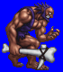
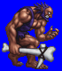
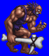
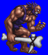

Height: 2-5 meters Weight: 400-1000 lbs.
Habitat: Mountains Origin: Europe
Meaning: "Ogerus" of ancient Roman language
Ogres are giants that appear in medieval fairy tales. Its height is usually about three times that of humans, but some ogres can change their body size at will. Most ogres are portrayed as cannibals, with an insatiable appetite for human flesh. It's intelligence is typically less than that of humans. Other monsters that appear in games, such as goblins, use the same archetype.